소방시설관리사 (2017-04-29 기출문제)
1과목: 방안전관리론
1. 프로판(C3H8) 2몰과 산소(O2) 10몰이 반응할 경우 이산화탄소(CO2)는 몇 몰이 생성되는가?
- 2
- 4
- 6
- 8
(정답률: 70%)

2. 폭발성분위기 내에 표준용기의 접합면 틈새를 통하여 폭발화염이 내부에서 외부로 전파되지 않는 최대안전틈새(화염일주한계)가 가장 넓은 물질은?
- 부탄
- 에틸렌
- 수소
- 아세틸렌
(정답률: 57%)
3. 열에너지원 중 기계적 열에너지가 아닌 것은?
- 마찰열
- 압축열
- 마찰스파크
- 유도열
(정답률: 69%)
4. 폭굉 유도거리가 짧아질 수 있는 조건으로 옳지 않은 것은?
- 점화에너지가 클수록 짧아진다.
- 정상 연소속도가 큰 가스일수록 짧아진다.
- 관경이 작을수록 짧아진다.
- 압력이 낮을수록 짧아진다.
(정답률: 57%)
5. 메탄 30vol%, 에탄 30vol%, 부탄 40vol%인 혼합기체의 공기 중 폭발하한계는 약 몇 vol%인가? (단, 공기 중 각 가스의 폭발하한계는 메탄 5.0vol%, 에탄 3.0vol%, 부탄 1.8vol%이다.)
- 2.62
- 3.28
- 4.24
- 5.27
(정답률: 56%)
6. 유류 저장탱크 내부의 물이 점성을 가진 뜨거운 기름의 표면 아래에서 끓을 때 화재를 수반하지 않고 기름이 넘치는 현상은?
- 슬롭오버(Slop over)
- 플레임오버(Flame over)
- 보일오버(Boil over)
- 프로스오버(Froth over)
(정답률: 59%)
7. 최소발화(점화)에너지에 영향을 미치는 인자에 관한 설명으로 옳지 않은 것은?
- 온도가 높을수록 최소발화에너지가 낮아진다.
- 압력이 낮을수록 최소발화에너지가 낮아진다.
- 산소의 분압이 높아지면 연소범위 내에서 최소발화에너지가 낮아진다.
- 연소범위에 따라서 최소발화에너지는 변하며 화학양론비 부근에서 가장 낮다.
(정답률: 58%)
8. 1기압 상온에서 인화점이 낮은 것에서 높은 것으로 옳게 나열한 것은?
- 아세톤＜이황화탄소＜메틸알코올＜벤젠
- 이황화탄소＜아세톤＜벤젠＜메틸알코올
- 벤젠＜이황화탄소＜아세톤＜메틸알코올
- 아세톤＜벤젠＜메틸알코올＜이황화탄소
(정답률: 58%)
9. 연소속도에 영향을 미치는 요인에 관한 설명으로 옳지 않은 것은?
- 화염온도가 높을수록 연소속도는 증가한다.
- 미연소 가연성 기체의 비열이 클수록 연소속도는 증가한다.
- 미연소 가연성 기체의 열전도율이 클수록 연소속도는 증가한다.
- 미연소 가연성 기체의 밀도가 작을수록 연소속도는 증가한다.
(정답률: 42%)
10. 목재 300kg과 고무 500kg이 쌓여 있는 공간(가로 4m, 세로 8m, 높이 6m)의 내부 화재하중(kg/m2)은 약 얼마인가? (단, 목재의 단위발열량은 18,855kJ/kg, 고무의 단위발열량은 42,430kJ/kg이다.)
- 44.54
- 46.62
- 48.22
- 50.62
(정답률: 49%)
11. 건축물 피난계획 수립 시 fool proof를 적용한 사례로 옳지 않은 것은?
- 소화ㆍ경보설비의 위치, 유도표지에 판별이 쉬운 색채를 사용한다.
- 피난방향으로 열리는 출입문을 설치한다.
- 도어노브는 회전식이 아닌 레버식을 사용한다.
- 정전 시를 대비한 비상조명등을 설치하며, 피난경로는 2방향 이상 피난로를 확보한다.
(정답률: 67%)
12. 구획실 내 화염(가로 2m, 세로 2m)에서 발생되는 연기 발생량(kg/s)을 힌클리(Hinkley) 공식을 이용해 계산하면 약 얼마인가? (단, 청결층(clear layer)의 높이 1.8m, 공기의 밀도 1.22kg/m3, 외기의 온도 290K, 화염의 온도 1,100K, 중력가 속도 9.81m/s2이다.)
- 3.15
- 3.32
- 3.63
- 3.87
(정답률: 34%)
13. 건축물의 화재안전에 대한 공간적 대응방법에 해당되지 않는 것은?
- 건축물 내장재의 난연ㆍ불연화성능
- 건축물의 내화성능
- 건축물의 방화구획성능
- 건축물의 제연설비성능
(정답률: 52%)
14. 건축물의 피난ㆍ방화구조 등의 기준에 관한 규칙상 건축물의 내화구조로 옳지 않은 것은? (단, 특별건축구역 등 기타 사항은 고려하지 않는다.)
- 외벽중 비내력벽의 경우 철골철근콘크리트조로서 두께가 5센티미터 이상인 것
- 보의 경우 철골을 두께 5센티미터 이상의 콘크리트로 덮은 것
- 벽의 경우 철재로 보강된 콘크리트블록조ㆍ벽돌조 또는 석조로서 철재에 덮은 콘크리트블록등의 두께가 5센티미터 이상인 것
- 기둥의 경우 그 작은 지름이 25센티미터 이상인 것으로서 철골을 두께 5센티미터 이상의 콘크리트로 덮은 것
(정답률: 40%)
15. 건축법령상 방화구획 등의 설치 대상건축물 중 방화구획 설치를 적용하지 아니하거나 그 사용에 지장이 없는 범위에서 완화하여 적용할 수 있는 것이 아닌 것은? (단, 특별건축구역 등 기타 사항은 고려하지 않는다.)
- 장례시설의 용도로 쓰는 거실로서 시선 및 활동공간의 확보를 위하여 불가피한 부분
- 승강기의 승강로 부분으로서 그 건축물의 다른 부분과 방화구획으로 구획된 부분
- 주요구조부가 난연재료로 된 주차장
- 복층형 공동주택의 세대별 층간 바닥 부분
(정답률: 50%)
16. 굴뚝효과(stack effect)에 관한 설명으로 옳은 것은?
- 건물 내부와 외부의 온도차가 클수록 발생가능성이 낮다.
- 일반적으로 고층 건물보다 저층 건물에서 더 크다.
- 층간 공기 누설과 관계가 없다.
- 건물 내부와 외부의 공기밀도차로 인해 발생한 압력차로 발생한다.
(정답률: 65%)
17. 연기의 피난한계에서 발광형 표지 및 주간 창의 가시거리(간파거리)는? (단, L은 가시거리, Cs는 감광계수이다.)
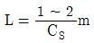
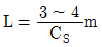
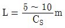
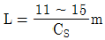
(정답률: 58%)
18. 제한된 공간에서 연기 이동과 확산에 관한 설명으로 옳지 않은 것은?
- 고층 건물의 연기 이동을 일으키는 주요 인자는 부력, 팽창, 바람 영향 등이다.
- 중성대에서 연기의 흐름이 가장 활발하다.
- 계단에서 연기 수직 이동속도는 일반적으로 3∼5m/s 이다.
- 거실에서 연기 수평 이동속도는 일반적으로 0.5∼1.0m/s 이다.
(정답률: 65%)
19. 공간 화재 특성에 관한 설명으로 옳지 않은 것은?
- 플래시오버는 실내의 국소화재로부터 실내 모든 가연물 표면이 연소하는 현상을 말한다.
- 백드래프트는 신선한 공기가 유입되어 실내에 축적되었던 가연성 가스가 단시간에 폭발적으로 연소하는 현상이다.
- 환기지배형 화재란 환기가 충분한 상태에서 가연물의 양에 따라 제어되는 화재를 말한다.
- 공간 화재에서 연기와 공기의 유동은 주로 온도상승에 의한 부력의 영향 때문이다.
(정답률: 64%)
20. 연기 제연방식에 관한 설명으로 옳은 것은?
- 밀폐제연방식은 비교적 대규모 공간의 연기제어에 적합하다.
- 자연제연방식은 실내ㆍ외의 온도, 개구부의 높이나 형상, 외부 바람 등에 영향을 받는다.
- 스모크타워 제연방식은 기계배연의 한 방법으로 저층 건물에 적합하다.
- 기계제연방식은 넓은 면적의 구획과 좁은 면적의 구획을 공동 배연할 경우 넓은 면적에서 현저한 압력 저하가 일어난다.
(정답률: 65%)
21. 연소물질과 연소 시 생성되는 연소가스의 연결이 옳은 것을 모두 고른 것은? (단, 불완전연소를 포함한다.)
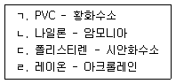
- ㄱ, ㄴ
- ㄱ, ㄷ
- ㄴ, ㄹ
- ㄷ, ㄹ
(정답률: 45%)
22. 화재 시 연기 성질에 관한 설명으로 옳지 않은 것은?
- 연기란 연소가스에 부가하여 미세하게 이루어진 미립자와 에어로졸성의 불안정한 액체 입자로 구성된다.
- 연기 입자의 크기는 0.01∼10㎛에 이르는 정도이다.
- 탄소입자가 다량으로 함유된 연기는 농도가 짙으며 검게 보인다.
- 연기의 생성은 화재 크기와는 관계가 없고, 층 면적과 구획 크기와 관계가 있다.
(정답률: 63%)
23. 표준대기압 조건에서 내부와 외부가 각각 25℃와 -10℃이고 높이가 170m인 건물에서 중성대가 건물의 중간 높이에 위치한다고 가정하면, 건물 샤프트의 최상부와 외부 사이의 굴뚝효과에 의한 압력차(Pa)는 약 얼마인가?
- 94.76
- 113.24
- 131.34
- 150.16
(정답률: 43%)
24. 난류화염으로부터 10℃의 벽으로 전달되는 대류 열유속(kW/m2)은? (단, 대류열전달계수 h값은 5 W/m2ㆍ℃을 사용하고, 시간 평균 최대화염온도는 약 900℃이다.)
- 3.16
- 4.45
- 5.41
- 6.12
(정답률: 53%)
25. 목조건축물의 화재 특성으로 옳지 않은 것은?
- 화염의 분출면적이 작고 복사열이 커서 접근하기 어렵다.
- 습도가 낮을수록 연소 확대가 빠르다.
- 횡방향보다 종방향의 화재성장이 빠르다.
- 화재 최성기 이후 비화에 의해 화재확대의 위험성이 높다.
(정답률: 56%)
2과목: 소방수리학·약제화학 및 소방전
26. 아보가드로(Avogadro)의 법칙에 관한 설명으로 옳은 것은?
- 온도가 일정할 때 기체의 압력은 부피에 반비례한다.
- 0℃, 1 기압에서 모든 기체 1몰의 부피는 22.4 L이다.
- 압력이 일정할 때 기체의 부피는 절대온도에 비례한다.
- 밀폐된 용기에서 유체에 가한 압력은 모든 방향에서 같은 크기로 전달된다.
(정답률: 54%)
27. 관성력과 점성력의 비를 나타내는 무차원수는?
- 웨버(Weber) 수
- 프루드(Froude) 수
- 오일러(Euler) 수
- 레이놀즈(Reynolds) 수
(정답률: 64%)
28. 배관 내 동압을 측정할 수 없는 장치는?
- 피토관
- 피에조미터
- 시차액주계
- 피토-정압관
(정답률: 50%)
29. 다음과 같이 단면이 원형인 연직점축소관에서 위에서 아래로 물이 0.3m3/s로 흐를때, 상ㆍ하 단면에서의 압력차는? (단, 관내 에너지손실은 무시하고, 물의 밀도는 1,000kg/m3, 중력가속도는 10.0 m/s2, 원주율은 3.0이다.)
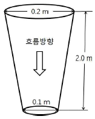
- 73 N/cm2
- 73 kN/m2
- 75 N/cm2
- 75 kN/m2
(정답률: 33%)
30. 안지름 2.0cm인 노즐을 통하여 매초 0.06m3의 물을 수평으로 방사할 때, 노즐에서 발생하는 반발력(kN)은? (단, 물의 밀도는 1,000kg/m3이고, 원주율은 3.0이다.)
- 1.0
- 1.2
- 10
- 12
(정답률: 32%)
31. 물의 특성을 나타내는 식과 그에 대한 차원식이 모두 옳게 표현된 것은? (단, 물의 점성계수는 μ, 동점성계수는 v, 밀도는 ρ, 비중량은 γ, 중력가속도는 g, 질량은 M, 길이는 L, 시간은 T이다.)
- μ=ρ×v[ML-1T-1]
- γ=ρ×g[ML-2T-1]
- ρ=v×μ[ML-3]
- γ=ρ×g[ML-3T-1]
(정답률: 38%)
32. 개방된 물탱크 A의 수면으로부터 5m 아래에 지름 10 mm인 오리피스를 부착하였다. 그 아래쪽에 설치한 한 변의 길이가 75cm인 정사각형 수조안으로 물을 낙하시켜서 16분 40초 후에 수조의 수심이 0.8m 상승하였다면, 오리피스의 유량계수는? (단, 물탱크 A의 수심은 변화 없고, 수축계수는 1.0, 원주율은 3.0, 중력가속도는 10.0m/s2이다.)
- 0.45
- 0.50
- 0.60
- 0.75
(정답률: 29%)
33. 서징(surging)현상에 관한 설명으로 옳은 것은?
- 만관흐름에서 관로 끝에 위치한 밸브를 갑자기 닫을 경우 발생한다.
- 펌프의 흡입측 배관의 물의 정압이 기존의 수증기압보다 낮아져서 기포가 발생한다.
- 수주분리(column separation)가 생겨 재결합 시에 발생하는 격심한 충격파로 관로에 피해를 발생시킨다.
- 펌프 운전 중에 계기압력의 눈금이 어떤 주기를 가지고 큰 진폭으로 흔들리고, 토출량도 어떤 범위에서 주기적인 변동이 발생된다.
(정답률: 47%)
34. 제1종 분말소화약제의 주성분인 탄산수소나트륨 10kg 전량이 850℃에서 2차 열분해될 때 생성되는 이산화탄소 발생량(kg)은 약 얼마인가? (단, 원자량은 Na: 23, H: 1, C: 12, O: 16으로 한다.)
- 2.62
- 3.48
- 5.24
- 10.48
(정답률: 30%)
35. 이산화탄소 소화약제에 관한 설명으로 옳지 않은 것은?
- 무색, 무취이며 전기적으로 비전도성이고 공기보다 약 1.5배 무겁다.
- 임계온도는 약 31 ℃이고, 삼중점은 0.51 MPa에서 약 -56℃이다.
- A급, B급, C급 화재에 모두 적응이 가능하나 주로 B급과 C급 화재에 사용된다.
- 한국산업규격에 따른 품질에 관한 액화이산화탄소 분류에서 제1종과 제2종을 소화약제로 사용한다.
(정답률: 52%)
36. 소화원액 15 L로 3 % 합성계면활성제포 수용액을 만들었다. 이 수용액을 이용하여 발생시킨 포의 총 부피가 325m3일 때, 팽창비는?
- 450
- 550
- 650
- 750
(정답률: 52%)
37. 화재안전기준(NFSC 107A)에서 정한 청정소화약제의 최대허용 설계농도 기준으로 옳지 않은 것은?
- HCFC-124 : 1.0 %
- HFC-227ea : 10.5 %
- HFC-125 : 12.5 %
- FC-3-1-10 : 40 %
(정답률: 45%)
38. 금속화재에 적응성이 없는 분말소화약제는?
- G-1
- MET-L-X
- Na-X
- CDC(Compatible Dry Chemical)
(정답률: 49%)
39. 질식소화를 위한 연소한계 산소농도가 15 vol%인 가연물질의 소화에 필요한 CO2가스의 최소소화농도(vol%)는? (단, 무유출(No efflux)방식을 전제로 하고, 공기 중 산소는 20 vol%이다.)
- 20
- 25
- 33
- 40
(정답률: 58%)
40. 다음 중 오존파괴지수가 가장 높은 소화약제는?
- Halon 2402
- Halon 1211
- CFC 12
- CFC 113
(정답률: 51%)
41. 열분해로 생성된 불연성의 용융물질에 의한 방진소화 효과를 발생시키는 분말 소화약제는?
- NH4H2PO4
- KHCO3
- NaHCO3
- KHCO3 + CO(NH2)2
(정답률: 61%)
42. 100 Ω의 저항부하 2개만으로 직렬 연결된 회로에 AC 60 Hz, 220 V의 교류전원을 인가하였을 때, 역률은 얼마인가?
- 1
- 0.9
- 0.8
- 0.7
(정답률: 42%)
43. 단면적이 2mm2이고, 길이가 2 km인 원형 구리 전선의 저항은 약 얼마인가? (단, 구리의 고유저항은 1.72 × 10-8Ωㆍm이다.)
- 1.72 mΩ
- 17.2 mΩ
- 1.72 Ω
- 17.2 Ω
(정답률: 34%)
44. 다음 회로에서 4 Ω의 저항에 흐르는 전류는?
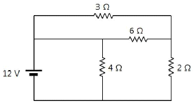
- 1 A
- 2 A
- 3 A
- 6 A
(정답률: 45%)
45. 다음은 정현파 교류전압 파형의 한 주기를 나타내었다. 시간(t )에 따른 전압의 순시값을 가장 근사하게 표현한 것은?
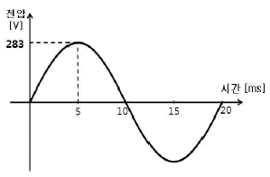
- v(t)=√2∙200∙sin40πt
- v(t)=√2∙200∙sin100πt
- v(t)=√2∙220∙sin40πt
- v(t)=√2∙220∙sin100πt
(정답률: 49%)
46. 자화되지 않은 강자성체를 외부 자계 내에 놓았더니 히스테리시스 곡선(hysteresis loop)이 나타났다. 이에 관한 설명으로 옳은 것을 모두 고른 것은?
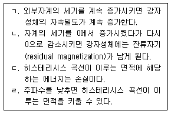
- ㄱ
- ㄴ, ㄷ
- ㄴ, ㄷ, ㄹ
- ㄱ, ㄴ, ㄷ, ㄹ
(정답률: 42%)
47. 다음 논리회로에 대한 논리식을 가장 간략화한 것은?
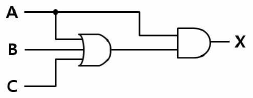
- X=A
- X=AB
- X=BC
- X=AB+BC
(정답률: 47%)
48. 다음 타임차트의 논리식은? (단, A, B, C는 입력, X는 출력이다.)
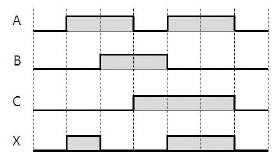
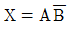
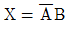
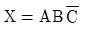
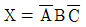
(정답률: 42%)
49. 콘덴서(condenser)에 축적되는 에너지를 2배로 만들기 위한 방법으로 옳지 않은 것은?
- 두 극판의 면적을 2배로 한다.
- 두 극판 사이의 간격을 0.5배로 한다.
- 두 전극 사이에 인가된 전압을 2배로 한다.
- 두 극판 사이에 유전율이 2배인 유전체를 삽입한다.
(정답률: 43%)
50. 다음은 금속관을 사용한 소방용 옥내배선 그림 기호의 일부분이다. 공사방법으로 옳지 않은 것은?
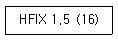
- 천장은폐배선을 한다.
- 직경 1.5 mm인 전선 4가닥을 사용한다.
- 내경 16 mm의 후강전선관을 사용한다.
- 저독성 난연 가교 폴리올레핀 절연 전선을 사용한다.
(정답률: 54%)
3과목: 소방관련법령
51. 소방기본법령상 국민안전처장관이 수립ㆍ시행하는 종합계획에 포함되어야 하는 사항에 해당하지 않는 것은?
- 소방전문인력 양성
- 화재안전분야 국제경쟁력 향상
- 소방업무의 교육 및 홍보
- 소방기술의 연구ㆍ개발 및 보급
(정답률: 48%)
52. 소방기본법령상 소방활동에 필요한 소방용수시설을 설치하고 유지ㆍ관리하여야하는 자는? (단, 권한의 위임 등 기타 사항은 고려하지 않음)
- 소방본부장ㆍ소방서장
- 시장ㆍ군수
- 시ㆍ도지사
- 국민안전처장관
(정답률: 63%)
53. 소방기본법령상 명시적으로 규정하고 있는 화재경계지구의 지정 대상지역에 해당하지 않는 것은?
- 주택이 밀집한 지역
- 공장ㆍ창고가 밀집한 지역
- 석유화학제품을 생산하는 공장이 있는 지역
- 소방시설ㆍ소방용수시설 또는 소방출동로가 없는 지역
(정답률: 57%)
54. 소방기본법령상 특수가연물의 저장 및 취급기준에 관한 설명으로 옳지 않은 것은?
- 살수설비를 설치하는 경우에는 쌓는 높이는 15 m 이하가 되도록 할 것
- 발전용으로 저장하는 석탄ㆍ목탄류는 품명별로 구분하여 쌓을 것
- 쌓는 부분의 바닥면적 사이는 1 m 이상이 되도록 할 것
- 특수가연물을 저장 또는 취급하는 장소에는 품명ㆍ최대수량 및 화기취급의 금지표지를 설치할 것
(정답률: 52%)
55. 소방시설공사업법령상 중급기술자 이상의 소방기술자(기계 및 전기분야) 배치기준으로 옳지 않은 것은?
- 호스릴 방식의 포소화설비가 설치되는 특정소방대상물의 공사 현장
- 아파트가 아닌 특정소방대상물로서 연면적 2만 m2 인 공사 현장
- 연면적 2만 m2인 아파트 공사 현장
- 제연설비가 설치되는 특정소방대상물의 공사 현장
(정답률: 35%)
56. 소방시설공사업법령상 소방시설업자의 지위승계가 가능한 자에 해당하는 것을 모두 고른 것은?
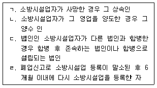
- ㄱ, ㄴ, ㄷ
- ㄱ, ㄷ, ㄹ
- ㄴ, ㄷ, ㄹ
- ㄱ, ㄴ, ㄷ, ㄹ
(정답률: 47%)
57. 화재예방, 소방시설 설치ㆍ유지 및 안전관리에 관한 법령상 특정소방대상물에 대하여 관계인이 소방시설 등을 정기적으로 자체점검할 때 소방시설별로 갖추어야 하는 점검 장비의 연결이 옳지 않은 것은?
- 포소화설비 - 헤드결합렌치
- 청정소화약제소화설비 - 절연저항계
- 옥내소화전설비 - 차압계
- 제연설비 - 폐쇄력측정기
(정답률: 56%)
58. 화재예방, 소방시설 설치ㆍ유지 및 안전관리에 관한 법령상 소방시설 등의 자체점검 시 점검인력 배치기준 중 종합정밀점검에서 점검인력 1단위가 하루 동안 점검 할 수 있는 특정소방대상물의 연면적(m2) 기준은?
- 7,000
- 8,000
- 9,000
- 10,000
(정답률: 64%)
59. 화재예방, 소방시설 설치ㆍ유지 및 안전관리에 관한 법령상 소방시설관리업의 등록기준으로 옳지 않은 것은?
- 소방설비산업기사는 보조 기술인력 자격이 없다.
- 보조 기술인력은 소방설비기사 2명 이상이다.
- 소방공무원으로 3년 이상 근무하고 소방기술 인정 자격수첩을 발급받은 사람은 보조 기술인력이 될 수 있다.
- 주된 기술인력은 소방시설관리사 1명 이상이다.
(정답률: 59%)
60. 화재예방, 소방시설 설치ㆍ유지 및 안전관리에 관한 법령상 연면적 126,000m2 의 업무시설인 건축물에서는 소방안전관리보조자를 최소 몇 명을 선임하여야 하는가?
- 5
- 6
- 8
- 9
(정답률: 39%)
61. 화재예방, 소방시설 설치ㆍ유지 및 안전관리에 관한 법령상 소방본부장이나 소방서장에게 건축허가 동의를 받아야 하는 건축물은?
- 연면적 150m2인 수련시설
- 주차장으로 사용되는 바닥면적이 150m2 인 층이 있는 주차시설
- 연면적 50m2 인 위험물 저장 및 처리시설
- 연면적 250m2인 장애인 의료재활시설
(정답률: 35%)
62. 화재예방, 소방시설 설치ㆍ유지 및 안전관리에 관한 법령상 방염성능검사 결과가 방염성능기준에 부합하지 않는 것은?
- 탄화한 길이는 22 cm 이었다.
- 버너의 불꽃을 제거한 때부터 불꽃을 올리며 연소하는 상태가 그칠 때까지 시간이 18초이었다.
- 버너의 불꽃을 제거한 때부터 불꽃을 올리지 아니하고 연소하는 상태가 그칠 때까지 시간이 27초이었다.
- 탄화한 면적은 45cm2 이었다.
(정답률: 52%)
63. 화재예방, 소방시설 설치ㆍ유지 및 안전관리에 관한 법령상 1년 이하의 징역 또는 1천만원 이하의 벌금에 처할 수 있는 것은?
- 소방특별조사를 정당한 사유 없이 거부ㆍ방해한 자
- 관리업의 등록증을 다른 자에게 빌려준 관리업자
- 소방안전관리자를 선임하여야 하는 관계자가 소방안전관리자를 선임하지 아니한 자
- 관리업자가 소방시설등의 점검을 하고 점검기록표를 거짓으로 작성한 자
(정답률: 27%)
64. 화재예방, 소방시설 설치ㆍ유지 및 안전관리에 관한 법령상 소방용품 중 형식승인을 받지 않아도 되는 것은? (단, 연구개발 목적의 용도로 제조하거나 수입하는 것은 제외함)
- 방염제
- 공기호흡기
- 유도표지
- 누전경보기
(정답률: 42%)
65. 화재예방, 소방시설 설치ㆍ유지 및 안전관리에 관한 법령상 신축하는 특정소방대상물 중 성능위주설계를 하여야 하는 장소에 해당하지 않는 것은?
- 높이가 115 m 인 업무시설
- 연면적 23만 m2 인 아파트
- 지하 5층이며 지상 29층인 의료시설
- 연면적 4만 m2 인 공항시설
(정답률: 48%)
66. 화재예방, 소방시설 설치ㆍ유지 및 안전관리에 관한 법령상 소방특별조사에 관한 설명으로 옳은 것은?
- 소방특별조사의 연기를 신청하려는 자는 소방특별조사 시작 1일 전까지 전화로 연기 신청을 할 수 있다.
- 소방특별조사를 하는 관계 공무원은 관계인에게 필요한 자료제출을 명할 수 있지만 필요한 보고를 하도록 할 수는 없다.
- 관계인이 장기출장으로 소방특별조사에 참여할 수 없는 경우에는 연기신청을 할 수 없다.
- 소방서장은 연기신청 결과 통지서를 연기신청자에게 통지하여야 하고, 연기기간이 종료하면 지체 없이 조사를 시작하여야 한다.
(정답률: 57%)
67. 위험물안전관리법령상 위험물시설의 설치 및 변경에 관한 설명으로 옳지 않은 것은? (단, 권한의 위임 등 기타 사항은 고려하지 않음)
- 제조소등을 설치하고자 하는 자는 그 설치장소를 관할하는 시ㆍ도지사의 허가를 받아야 한다.
- 제조소등의 위치ㆍ구조 등의 변경없이 당해 제조소등에서 저장하는 위험물의 품명ㆍ수량 등을 변경하고자 하는 자는 변경하고자 하는 날까지 시ㆍ도지사의 허가를 받아야 한다.
- 군사목적으로 제조소등을 설치하고자 하는 군부대의 장이 제조소등의 소재지를 관할하는 시ㆍ도지사와 협의한 경우에는 허가를 받은 것으로 본다.
- 군부대의 장은 국가기밀에 속하는 제조소등의 설비를 변경하고자 하는 경우에는 당해 제조소등의 변경공사를 착수하기 전에 그 공사의 설계도서와 서류제출을 생략할 수 있다.
(정답률: 50%)
68. 위험물안전관리법령상 허가를 받고 설치하여야 하는 제조소등을 모두 고른 것은?
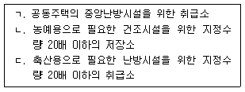
- ㄱ, ㄴ
- ㄱ, ㄷ
- ㄴ, ㄷ
- ㄱ, ㄴ, ㄷ
(정답률: 42%)
69. 위험물안전관리법령상 탱크안전성능검사의 내용에 해당하지 않는 것은?
- 수직ㆍ수평검사
- 충수ㆍ수압검사
- 기초ㆍ지반검사
- 암반탱크검사
(정답률: 47%)
70. 위험물안전관리법령상 과징금에 관한 설명으로 옳지 않은 것은?
- 시ㆍ도지사는 제조소등에 대한 사용의 취소가 공익을 해칠 우려가 있는 때에는 사용 취소처분에 갈음하여 1억원 이하의 과징금을 부과할 수 있다.
- 과징금의 징수절차에 관하여는「국고금 관리법 시행규칙」을 준용한다.
- 1일당 과징금의 금액은 당해 제조소등의 연간 매출액을 기준으로 하여 산정한다.
- 시ㆍ도지사는 과징금을 납부하여야 하는 자가 납부기한까지 이를 납부하지 아니 한 때에는「지방세외수입금의 징수 등에 관한 법률」에 따라 징수한다.
(정답률: 48%)
71. 위험물안전관리법령상 탱크시험자로 등록하거나 탱크시험자의 업무에 종사할 수 있는 경우는?
- 피성년후견인 또는 피한정후견인
- 「소방기본법」에 따른 금고 이상의 형의 집행유예 선고를 받고 그 유예기간 중에 있는 자
- 「소방시설공사업법」에 따른 금고 이상의 실형의 선고를 받고 그 집행이 종료되거나 집행이 면제된 날부터 1년이 된 자
- 탱크시험자의 등록이 취소된 날부터 3년이 된 자
(정답률: 58%)
72. 다중이용업소의 안전관리에 관한 특별법령상 다중이용업소의 안전관리기본계획(이하 “기본계획”이라 한다)의 수립ㆍ시행에 관한 설명으로 옳지 않은 것은?
- 기본계획에는 다중이용업소의 안전관리에 관한 기본방향이 포함되어야 한다.
- 국민안전처장관은 수립된 기본계획을 시ㆍ도지사에게 통보하여야 한다.
- 시ㆍ도지사는 기본계획에 따라 연도별 계획을 수립ㆍ시행하여야 한다.
- 국민안전처장관은 5년마다 다중이용업소의 기본계획을 수립ㆍ시행하여야 한다.
(정답률: 37%)
73. 다중이용업소의 안전관리에 관한 특별법령상 화재위험평가대행자의 등록을 반드시 취소해야 하는 사유에 해당하지 않는 것은?
- 평가서를 거짓으로 작성하거나 고의 또는 중대한 과실로 평가서를 부실하게 작성한 경우
- 다른 사람에게 등록증이나 명의를 대여한 경우
- 거짓이나 그 밖의 부정한 방법으로 등록한 경우
- 최근 1년 이내에 2회의 업무정지처분을 받고 다시 업무정지처분 사유에 해당하는 행위를 한 경우
(정답률: 53%)
74. 다중이용업소의 안전관리에 관한 특별법령상 화재배상책임보험의 가입 촉진 및 관리에 관한 설명으로 옳지 않은 것은?
- 다중이용업주는 다중이용업주를 변경한 경우 화재배상책임보험에 가입한 후 그 증명서를 소방서장에게 제출하여야 한다.
- 화재배상책임보험에 가입한 다중이용업주는 화재배상책임보험에 가입한 영업소임을 표시하는 표지를 부착할 수 있다.
- 보험회사는 화재배상책임보험에 가입하여야 할 자와 계약을 체결한 경우 소방서장에게 알려야 한다.
- 소방서장은 다중이용업주가 화재배상책임보험에 가입하지 아니한 경우 허가취소를 하거나 영업정지를 할 수 있다.
(정답률: 46%)
75. 다중이용업소의 안전관리에 관한 특별법령상 용어의 설명으로 옳지 않은 것은?
- “안전시설등”이란 소방시설, 비상구, 영업장 내부 피난통로 그 밖의 안전시설을 말한다.
- “영업장의 내부구획”이란 다중이용업소의 영업장 내부를 이용객들이 사용할 수 있도록 벽 또는 칸막이 등을 사용하여 구획된 실을 만드는 것을 말한다.
- “실내장식물”이란 건축물 내부의 천장 또는 벽ㆍ바닥 등에 설치하는 것으로 옷장, 찬장 등 가구류가 포함된다.
- “다중이용업”이란 불특정다수인이 이용하는 영업중 화재 등 재난발생시 생명ㆍ신체ㆍ 재산상의 피해가 발생할 우려가 높은 영업을 말한다.
(정답률: 55%)
4과목: 위험물의 성상 및 시설기준
76. 제1류 위험물에 관한 설명으로 옳지 않은 것은?
- 모두 불연성물질이며, 강력한 산화제로 열분해하여 산소를 발생시킨다.
- 브롬산염류, 질산염류, 요오드산염류는 지정수량이 300 kg이고 위험등급 Ⅱ에 해당된다.
- 물에 녹아 수용액 상태가 되면 산화성이 없어진다.
- 무기과산화물, 퍼옥소붕산염류, 삼산화크롬은 물과 반응하여 산소를 발생하고 발열한다.
(정답률: 52%)
77. 제1류 위험물인 질산염류에 관한 설명으로 옳은 것은?
- 질산나트륨은 흑색화약의 원료로 사용된다.
- 질산칼륨은 AN-FO 폭약의 원료로 사용된다.
- 강력한 산화제로 염소산염류에 비해 불안정하여 폭약의 원료로 사용된다.
- 물에 잘 녹으며 조해성이 있는 것이 많다.
(정답률: 47%)
78. 제2류 위험물인 황화린에 관한 설명으로 옳지 않은 것은?
- 대표적으로 안정된 황화린은 P4S3, P2S5, P4S7 이 있다.
- P4S3, P2S5, P4S7 의 연소생성물은 오산화인과 이산화황으로 동일하며 유독하다.
- P4S3, P2S5, P4S7 는 찬물과 반응하여 가연성 가스인 황화수소가 발생된다.
- 가열에 의해 매우 쉽게 연소하며 때에 따라 폭발한다.
(정답률: 43%)
79. 물과 반응하여 가연성 가스인 메탄(CH4)이 발생되는 위험물을 모두 고른 것은?
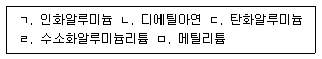
- ㄷ, ㅁ
- ㄹ, ㅁ
- ㄱ, ㄴ, ㄹ
- ㄷ, ㄹ, ㅁ
(정답률: 42%)
80. 아세트알데히드(Acetaldehyde)를 취급하는 제조설비의 재질로 사용할 수 있는 것은?
- 구리
- 마그네슘
- 은
- 철
(정답률: 47%)
81. 특수인화물에 해당하지 않는 것은?
- C2H5OC2H5
- CH3CHCH2O
- CH3COCH3
- CH3CHO
(정답률: 40%)
82. 디에틸에테르를 장시간 저장할 때 폭발성의 불안정한 과산화물을 생성한다. 이러한 과산화물 생성방지를 위한 방법으로 옳은 것은?
- 10 % KI 용액을 첨가한다.
- 40 mesh의 구리망을 넣어준다.
- 30 % 황산제일철을 넣어준다.
- CaCl2를 넣어준다.
(정답률: 52%)
83. 제5류 위험물 중 니트로화합물에 해당하는 물질로만 이루어진 것은?
- 니트로셀룰로오스, 니트로글리세린, 니트로글리콜
- 트리니트로톨루엔, 디니트로페놀, 니트로글리콜
- 니트로글리세린, 펜트리트, 디니트로톨루엔
- 트리니트로톨루엔, 피크린산, 테트릴
(정답률: 37%)
84. 트리니트로톨루엔(TNT)의 열분해 생성물이 아닌 것은?
- H2
- CO2
- CO
- N2
(정답률: 44%)
85. 옥내저장소에 질산칼륨 450 kg, 염소산칼륨 300 kg, 질산 600 L를 저장하고 있다. 이 저장소는 지정수량의 몇 배를 저장하고 있는가? (단, 저장 중인 질산의 비중은 1.5이다.)
- 5.5
- 9.5
- 10.5
- 12.5
(정답률: 33%)
86. 제6류 위험물에 관한 설명으로 옳지 않은 것은?
- 농도가 30 wt%인 과산화수소는 「위험물안전관리법령」상의 위험물이다.
- 과산화수소의 자연분해 방지를 위해 용기에 인산 또는 요산을 첨가한다.
- 질산은 염산과 일정한 비율로 혼합되면 금과 백금을 녹일 수 있는 왕수가 된다.
- 과염소산은 가열하면 폭발적으로 분해되고 유독성 염화수소를 발생한다.
(정답률: 52%)
87. 위험물안전관리법령상 위험물별 지정수량과 위험등급의 연결이 옳지 않은 것은? (문제 오류로 실제 시험에서는 1, 2번이 정답처리 되었습니다. 여기서는 1번을 누르면 정답 처리 됩니다.)
- 에틸알코올, 메틸에틸케톤 - 400 L - Ⅱ등급
- 질산암모늄, 수소화리튬 - 300 kg - Ⅲ등급
- 알킬알루미늄, 유기과산화물 - 10 kg - Ⅰ등급
- 철분, 마그네슘 - 500 kg - Ⅲ등급
(정답률: 45%)
88. 위험물안전관리법령상 옥외탱크저장소 주위에 확보하여야 하는 보유공지는 어느부분을 기준으로 너비를 확보하는가?
- 방유제의 내벽
- 옥외저장탱크의 측면
- 옥외저장탱크 밑판의 중심
- 펌프시설의 중심
(정답률: 49%)
89. 위험물안전관리법령상 히드록실아민등을 취급하는 제조소의 담 또는 토제 설치 기준에 관한 내용이다. ( )에 알맞은 숫자를 순서대로 나열한 것은?
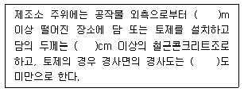
- 2, 15, 60
- 2, 20, 45
- 3, 15, 60
- 3, 20, 45
(정답률: 37%)
90. 위험물안전관리법령상 제조소등에 설치하는 비상구 설치 기준으로 옳지 않은 것은?
- 출입구와 같은 방향에 있지 아니하고, 출입구로부터 3미터 이상 떨어져 있을 것
- 작업장 각 부분으로부터 하나의 비상구까지 수평거리는 50 미터 이하가 되도록 할 것
- 비상구의 너비는 0.75미터 이상, 높이는 1.5미터 이상으로 할 것
- 피난 방향으로 열리는 구조이며, 항상 잠겨 있는 구조로 할 것
(정답률: 53%)
91. 위험물 제조소의 옥외에 있는 위험물 취급탱크 2기가 방유제 내에 있다. 방유제의 최소 내용적(m3)은 얼마인가?
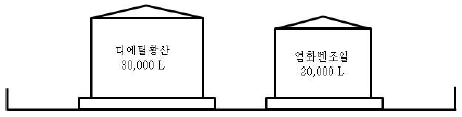
- 15
- 17
- 32
- 33
(정답률: 40%)
92. 위험물안전관리법령상 옥외저장소에 저장 또는 취급할 수 없는 위험물은? (단, 국제해상위험물규칙에 적합한 용기에 수납된 경우, 보세구역 안에 저장하는 경우는 제외한다.)
- 벤젠
- 톨루엔
- 피리딘
- 에틸알코올
(정답률: 40%)
93. 위험물안전관리법령상 이송취급소를 설치할 수 없는 장소는? (단, 지형상황 등 부득이한 경우 또는 횡단의 경우는 제외한다.)
- 시가지 도로의 노면 아래
- 산림 또는 평야
- 고속국도의 길어깨
- 지하 또는 해저
(정답률: 54%)
94. 위험물안전관리법령상 옥내저장탱크의 대기밸브 부착 통기관은 얼마 이하의 압력차 (kPa)로 작동되어야 하는가?
- 5
- 7
- 10
- 20
(정답률: 48%)
95. 위험물안전관리법령상 옥내탱크저장소의 저장탱크에 클레오소트유(Creosote Oil)를 저장하고자 할 때 최대용량(L)은?
- 20,000
- 40,000
- 60,000
- 80,000
(정답률: 28%)
96. 다음 그림과 같은 저장탱크에 중유를 저장하고자 한다. 지정수량의 최대 몇 배를 저장할 수 있는가? (단, 공간용적은 10 %이고, 원주율은 3.14, 소수점 셋째자리에 서 반올림한다.)
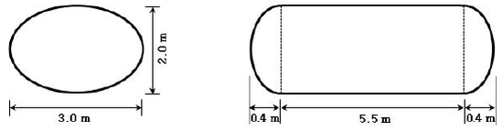
- 12.22
- 13.03
- 13.58
- 14.47
(정답률: 28%)
97. 위험물안전관리법령상 수소충전설비를 설치한 주유취급소의 충전설비 설치 기준으로 옳지 않은 것은?
- 자동차등의 충돌을 방지하는 조치를 마련할 것
- 충전호스는 200 kg중 이하의 하중에 의하여 파단 또는 이탈되어야 할 것
- 급유공지 또는 주유공지에 설치할 것
- 충전호스는 자동차등의 가스충전구와 정상적으로 접속하지 않는 경우에는 가스가 공급되지 않는 구조로 할 것
(정답률: 46%)
98. 제4류 위험물 제1석유류인 아세톤 1,000 L를 사용하는 취급소의 살수기준면적이 465m2이라면, 소화설비 적응성을 갖기 위한 스프링클러설비의 최소 방사량 (m3/min)은? (단, 위험물을 취급하는 설비 또는 부분이 넓게 분산되어 있지 않다. 소수점 셋째자리에서 반올림한다.)
- 3.77
- 4.⑤
- 5.67
- 6.10
(정답률: 21%)
99. 위험물안전관리법령상 제1종 판매취급소의 위치ㆍ구조 및 설비의 기준에 관한 설명으로 옳지 않은 것은?
- 상층이 없는 경우 지붕은 내화구조 또는 불연재료로 한다.
- 취급하는 위험물은 지정수량 20배 이하로 한다.
- 상층이 있는 경우 상층의 바닥을 내화구조로 한다.
- 저장하는 위험물은 지정수량 40배 이하로 한다.
(정답률: 48%)
100. 위험물안전관리법령상 주유취급소의 위치ㆍ구조 및 설비의 기준에 관한 내용이다. ( )에 알맞은 숫자를 순서대로 나열한 것은?
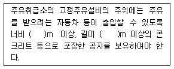
- 6, 10
- 6, 15
- 10, 6
- 15, 6
(정답률: 47%)
5과목: 소방시설의 구조원리
101. 특정소방대상물별 소화기구의 능력단위기준에 관한 설명으로 옳은 것은? (단, 주요 구조부는 내화구조가 아님)
- 위락시설: 바닥면적 50m2마다 능력단위 1단위 이상
- 장례식장: 바닥면적 100m2 마다 능력단위 1단위 이상
- 관광휴게시설: 바닥면적 100m2 마다 능력단위 1단위 이상
- 창고시설: 바닥면적 200m2 마다 능력단위 1단위 이상
(정답률: 45%)
102. 도로터널의 화재안전기준에 관한 내용으로 옳지 않은 것은?
- 소화전함과 방수구는 주행차로 우측 측벽을 따라 50 m 이내의 간격으로 설치하며, 편도 2차선 이상의 양방향 터널이나 4차로 이상의 일방향 터널의 경우에는 양쪽 측벽에 각각 50 m 이내의 간격으로 엇갈리게 설치할 것
- 물분무설비의 하나의 방수구역은 25 m이상으로 하며, 4개 방수구역을 동시에 20분이상 방수할 수 있는 수량을 확보할 것
- 제연설비의 설계화재강도는 20 MW를 기준으로 하고, 이 때 연기발생률은 80m3/s로 할 것
- 연결송수관설비의 방수압력은 0.35 MPa 이상, 방수량은 400 L/min 이상을 유지할 수 있도록 할 것
(정답률: 54%)
103. 미분무소화설비의 방수구역 내에 설치된 미분무헤드의 개수가 20개, 헤드 1개당 설계유량은 50ℓ/min, 방사시간 1시간, 배관의 총 체적 0.06m3 이며, 안전율은 1.2일 경우 본 소화설비에 필요한 최소 수원의 양(m3)은?
- 72.06
- 74.06
- 76.06
- 78.06
(정답률: 50%)
104. 경유를 저장한 직경 40 m인 플로팅루프 탱크에 고정포방출구를 설치하고 소화약제는 수성막포농도 3 %, 분당 방출량 10ℓ/m2, 방사시간 20분으로 설계할 경우 본 포소화설비의 고정포방출구에 필요한 소화약제량(ℓ)은 약 얼마인가? (단, 탱크내면과 굽도리판의 간격은 1.4 m, 원주율은 3.14, 기타 제시되지 않은 것은 고려하지 않음)
- 1,018.11
- 1,108.11
- 1,⑤8.11
- 1,208.11
(정답률: 33%)
1⑤. 소화수조 및 저수조의 화재안전기준에 관한 내용으로 옳지 않은 것은?
- 지하에 설치하는 소화용수설비의 흡수관투입구는 그 한변이 0.6 m 이상이거나 직경이 0.6 m이상인 것, 소요수량이 80m3미만인 것은 1개 이상, 80m3 이상인 것은 2개 이상을 설치한다.
- 1층과 2층의 바닥면적의 합계가 32,000m2 인 경우 소화수조의 저수량은 100m3이상이어야 한다.
- 소화수조 또는 저수조가 지표면으로부터의 깊이가 4.5 m 이상인 지하에 있는 경우에 는 소요수량에 관계없이 가압송수장치의 분당 양수량은 1,100ℓ이상으로 설치한다.
- 소화용수설비를 설치하여야 할 특정소방대상물에 있어서 유수의 양이 0.8m3/min 이상인 유수를 사용할 수 있는 경우에는 소화수조를 설치하지 아니할 수 있다.
(정답률: 40%)
106. 스프링클러설비의 화재안전기준에 관한 내용으로 옳은 것은?
- 50층인 초고층건축물에 스프링클러설비를 설치할 때 본 설비의 유효수량과 옥상에 설치한 수원의 양을 합한 수원의 양은 100m3이다.
- 소방펌프의 성능은 체절운전 시 정격토출압력의 150 %를 초과하지 아니하고, 정격토출량의 140 %로 운전 시 정격토출압력의 65 % 이상이 되어야 한다.
- 성능시험배관은 펌프의 토출측에 설치된 개폐밸브 이후에서 분기하여 설치하고, 유량 측정장치를 기준으로 전단 및 후단의 직관부에 개폐밸브를 설치한다.
- 가압송수장치에는 체절운전 시 수온의 상승을 방지하기 위한 순환배관을 설치할 것 다만, 충압펌프의 경우에는 그러하지 아니하다.
(정답률: 46%)
107. 승강식피난기 및 하향식 피난구용 내림식사다리에 관한 설치기준으로 옳은 것은?
- 하강구 내측에는 기구의 연결 금속구 등이 있어야 하며 전개된 피난기구는 하강구수직투영면적 공간 내의 범위를 침범하지 않는 구조이어야 할 것
- 승강식피난기 및 하향식 피난구용 내림식사다리는 설치경로가 설치층에서 피난층까지 연계될 수 있는 구조로 설치할 것. 단, 건축물 규모가 지상 4층 이하로서 구조 및 설치 여건상 불가피한 경우는 그러하지 아니한다.
- 대피실의 출입문은 갑종방화문으로 설치하고, 피난방향에서 식별할 수 있는 위치에 “대피실” 표지판을 부착할 것. 단, 외기와 개방된 장소에는 그러하지 아니 한다. 또 한 착지점과 하강구는 상호 수평거리 15 cm 이상의 간격을 둘 것
- 대피실 출입문이 개방되거나, 피난기구 작동 시 해당층 및 직상층 거실에 설치된유도표지 및 시각장치가 작동되고, 감시 제어반에서는 피난기구의 작동을 확인할수 있어야 할 것
(정답률: 33%)
108. 특정소방대상물에 아래의 조건에 따라 소방펌프를 설치할 경우 전동기의 설계용량(kW)은 약 얼마인가?
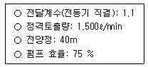
- 12.4
- 14.4
- 16.4
- 20.4
(정답률: 56%)
109. 소방시설 도시기호의 명칭을 순서대로 연결한 것은? (순서대로 ㄱ, ㄴ, ㄷ,ㄹ)
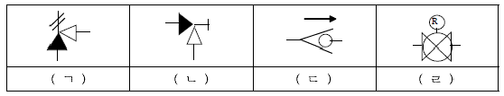
- 릴리프밸브(일반), 앵글밸브, 가스체크밸브, 감압밸브
- 앵글밸브, 릴리프밸브(일반), 감압밸브, 가스체크밸브
- 앵글밸브, 릴리프밸브(일반), 가스체크밸브, 감압밸브
- 릴리프밸브(일반), 가스체크밸브, 앵글밸브, 감압밸브
(정답률: 58%)
110. 화재예방, 소방시설 설치ㆍ유지 및 안전관리에 관한 법령에서 제시된 소방시설의 분류로 옳지 않은 것은?
- 경보설비: 자동화재탐지설비, 비상경보설비, 비상방송설비, 가스누설경보기
- 피난설비: 피난기구, 인명구조기구, 유도등, 비상조명등, 제연설비
- 소화설비: 소화기구, 소화전설비(옥내, 옥외), 물분무소화설비, 미분무소화설비
- 소화활동설비: 연결살수설비, 연소방지설비, 무선통신보조설비, 비상콘센트설비
(정답률: 54%)
111. 소방시설 종합정밀점검표에 따른 다중이용업 소방시설 등의 점검사항 중 기타 시설로 옳지 않은 것은?
- 영상음향차단장치
- 방염물품
- 누전차단기
- 방화문
(정답률: 44%)
112. 고층건축물의 화재안전기준에 따른 피난안전구역에 설치하는 소방시설 중 피난 유도선의 설치기준으로 옳지 않은 것은?
- 피난안전구역이 설치된 층의 계단실 출입구에서 피난안전구역 주 출입구 또는 비상구까지 설치할 것
- 계단실에 설치하는 경우 계단 및 계단참에 설치할 것
- 피난유도 표시부의 너비는 최소 20 mm 이하로 설치할 것
- 광원점등방식(전류에 의하여 빛을 내는 방식)으로 설치하되, 60분 이상 유효하게 작동할 것
(정답률: 55%)
113. 휴대용비상조명등 설치기준으로 옳지 않은 것은?
- 숙박시설 또는 다중이용업소에는 객실 또는 영업장안의 구획된 실마다 잘 보이는 곳 (외부에 설치시 출입문 손잡이로부터 1 m 이내 부분)에 1개 이상 설치할 것
- 「유통산업발전법」에 따른 대규모점포(지하상가 및 지하역사는 제외한다)와 영화상영관에는 보행거리 50 m 이내마다 2개를 설치할 것
- 지하상가 및 지하역사에는 보행거리 25 m 이내마다 3개 이상 설치할 것
- 설치높이는 바닥으로부터 0.8 m 이상 1.5 m 이하의 높이에 설치할 것
(정답률: 57%)
114. 소방시설의 내진설계 기준으로 옳은 것은?
- 배관에 대한 내진설계를 실시할 경우 지진분리이음은 배관의 수직지진하중에 따라 산정하여야 한다.
- 배관의 변형을 최소화하기 위하여 소화설비 주요 부품과 벽체 상호간을 견고하게 고정하여야 한다.
- 건축 구조부재 상호간의 상대변위에 의한 배관의 응력을 최대화시키기 위하여 신축 배관을 사용하거나 적당한 이격 거리를 유지하여야 한다.
- 건물의 지진분리 이음이 설치된 위치의 배관에는 직경과 상관없이 지진분리장치를 설치하여야 한다.
(정답률: 44%)
115. 수평 배관의 직경이 확대되면서 유속이 16 m/sec에서 6 m/sec로 변동될 경우 압력 수두(m)는 얼마인가? (단, 중력가속도는 10 m/sec2 이다.)
- 4
- 8
- 11
- 15
(정답률: 44%)
116. 절연유 봉입 변압기 설비에 물분무소화설비를 설치한 경우 필요한 저수량(m3)은 얼마인가? (단, 바닥면적을 제외한 변압기의 표면적은 24m2)
- 1.2
- 2.4
- 3.6
- 4.8
(정답률: 49%)
117. 다음 간이소화 용구를 배치했을 때 능력단위의 합은?
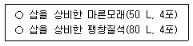
- 2단위
- 3단위
- 4단위
- 5단위
(정답률: 59%)
118. 무선통신보조설비의 화재안전기준상 누설동축케이블 등의 설치기준으로 옳지 않은 것은?
- 누설동축케이블은 화재에 따라 해당 케이블의 피복이 소실된 경우에 케이블 본체가 떨어지지 아니하도록 4 m 이내마다 금속제 또는 자기제등의 지지금구로 벽ㆍ천장ㆍ기둥 등에 견고하게 고정시킬 것
- 누설동축케이블의 중간부분에는 무반사 종단저항을 견고하게 설치할 것
- 누설동축케이블 및 공중선은 금속판 등에 따라 전파의 복사 또는 특성이 현저하게 저하되지 아니하는 위치에 설치할 것
- 누설동축케이블 및 공중선은 고압의 전로로부터 1.5 m이상 떨어진 위치에 설치할 것
(정답률: 52%)
119. 스프링클러설비의 화재안전기준상 설치장소의 최고주위온도가 79 ℃인 경우, 표시 온도 몇 ℃의 폐쇄형스프링클러헤드를 설치해야 하는가? (단, 높이가 4 m 이상인 공장 및 창고는 제외한다.)
- 64 ℃ 이상 106℃ 미만
- 79℃ 이상 121 ℃ 미만
- 121 ℃ 이상 162℃ 미만
- 162℃ 이상
(정답률: 48%)
120. 자동화재탐지설비의 화재안전기준상 20 m 이상의 높이에 설치할 수 있는 감지기는?
- 차동식 분포형 공기관식 감지기
- 광전식 스포트형 중 아나로그방식
- 이온화식 스포트형 중 아나로그방식
- 광전식 공기흡입형 중 아나로그방식
(정답률: 53%)
121. 각 층의 바닥면적이 500m2 인 건축물에 다음 조건에 따라 자동화재탐지설비를 설치하는 경우 P형 수신기의 필요한 최소가닥수는? (단, 계단은 고려하지 않음)
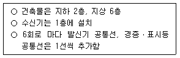
- 20 가닥
- 22 가닥
- 24가닥
- 28 가닥
(정답률: 38%)
122. 임시소방시설의 화재안전기준상 용어의 정의로 옳지 않은 것은?
- “소화기”란 소화약제를 압력에 따라 방사하는 기구로서 사람이 수동으로 조작하여 소화하는 것을 말한다.
- “간이소화장치”란 공사현장에서 화재위험작업 시 신속한 화재 진압이 가능하도록 물을 방수하는 이동식 또는 고정식 형태의 소화장치를 말한다.
- “비상경보장치”란 화재위험작업 공간 등에서 자동조작에 의해서 화재경보상황을 알려줄 수 있는 설비(비상벨, 사이렌, 휴대용확성기 등)를 말한다.
- “간이피난유도선”이란 화재위험작업 시 작업자의 피난을 유도할 수 있는 케이블형태의 장치를 말한다.
(정답률: 43%)
123. 연면적이 65,000m2 인 5층 건축물에 설치되야 하는 소화수조 또는 저수조의 최소 저수량은? (단, 각 층의 바닥면적은 동일)
- 160m33이상
- 180m3 이상
- 200m3 이상
- 220m3 이상
(정답률: 45%)
124. 다음 조건에서 이산화탄소소화설비를 설치할 경우 감지기의 최소설치 개수는?
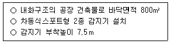
- 23
- 32
- 46
- 64
(정답률: 35%)
125. 소방시설의 내진설계 기준상 용어의 정의로 옳지 않은 것은?
- “내진”이란 면진, 제진을 포함한 지진으로부터 소방시설의 피해를 줄일 수 있는 구조를 의미하는 포괄적인 개념을 말한다.
- “면진”이란 건축물과 소방시설을 분리시켜 지반진동으로 인한 지진력이 직접 구조물로 전달되는 양을 감소시킴으로써 내진성을 확보하는 수동적인 지진 제어 기술을 말한다.
- “세장비(L/r)”란 버팀대의 길이(L)와, 최소회전반경(r)의 비율을 말하며, 세장비가 작을수록 좌굴(buckling)현상이 발생하여 지진발생시 파괴되거나 손상을 입기 쉽다.
- “내진스토퍼”란 지진하중에 의해 과도한 변위가 발생하지 않도록 제한하는 장치를 말한다.
(정답률: 50%)
C3H8 + 5O2 → 3CO2 + 4H2O
따라서 2몰의 프로판과 10몰의 산소가 반응하면 3몰의 CO2가 생성됩니다. 따라서 정답은 "6"입니다.